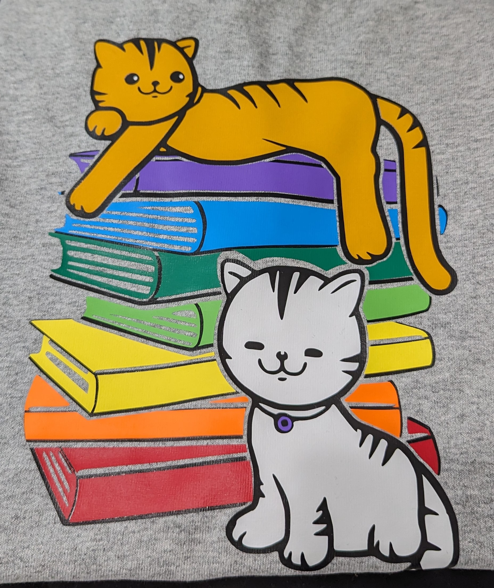
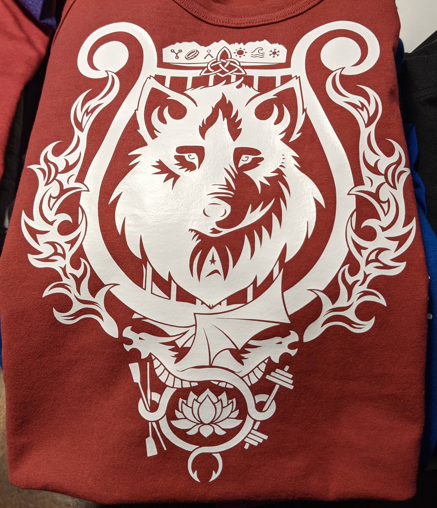
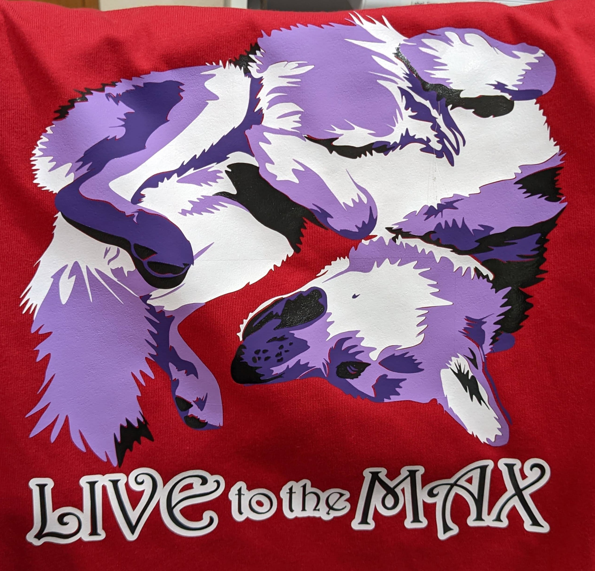

I've been designing shirts for my family and friends for several years.
I use the
Silhouette Studio software
to create designs, the
Silhouette Cameo 4
to cut out vinyl, and a heat press to attach the vinyl to the shirts.
Most of my designs are created from elements found online, but some are
original designs that I created myself. I also occasionally make
merchandise items for a local store owner. My favorite original design
so far is my "Bookwyrm" design, and it has become a logo for myself and
my work, as well as many shirts for my husband and kids!
Book-Inspired Designs
My "Buy Books" shirts are generally made with glow-in-the-dark vinyl,
and are quite popular with all the readers in the family. The whale and
Milliways shirts are from the Hitchhiker's Guide to the Galaxy series,
and my Ornithology, Tress, and Yumi shirts are from various books
written by Brandon Sanderson. The Pern shirt is an homage to Anne
McCaffrey's Dragonrider books.
TV and Movie Inspired Designs
The Good Omens shirt has Aziraphale and Crowley making up a yin-yang,
and was created after we watched the first season. "Don't piss me off,
Art" is from Christmas Vacation and was a special design for my
brother-in-law. The Tad Cooper shirts are a reference to the amazing
(and gone far too soon) show Galavant.
Chess Designs
My kids and their friends became obsessed with chess several years ago,
especially my younger son. They also love llamas, so I made them these
"Chess is Llamazing" shirts. I also made a chess logo for my younger son
to wear when he played in tournaments.
Dragon Designs
One of my "bonus" kids is obsessed with dragons, so I have made A LOT of
dragon shirts. Some of these shirts are made with my favorite vinyl,
which looks black under normal lighting but then shines in a rainbow
when seen under a strong light such as a camera flash. My kids and some
of their friends also love dragons, so these designs get used often.
Cat Designs

One of my "bonus" kids loves cats more than anything, so I have made her
a lot of cat shirts over the years. Some of our other kid friends have
also enjoyed the shirts, and the mandala cats design is very popular.
Other Designs


I designed a personal crest for a friend of mine, which has ended up on
shirts and a snowboard. I also made a "Diversified Portfolio" shirt for
my husband who loves playing guitar and bass. I designed some "Max"
shirts featuring our favorite dog (named Max, of course!) I've also made
many shirts for my mom with all the names of her grandchildren, and a
few for my dad as well. I designed a "Get Lit" bag for a local business
as prizes for a literature-based trivia night, and a board to collect
socks that come out of the laundry without their mates.